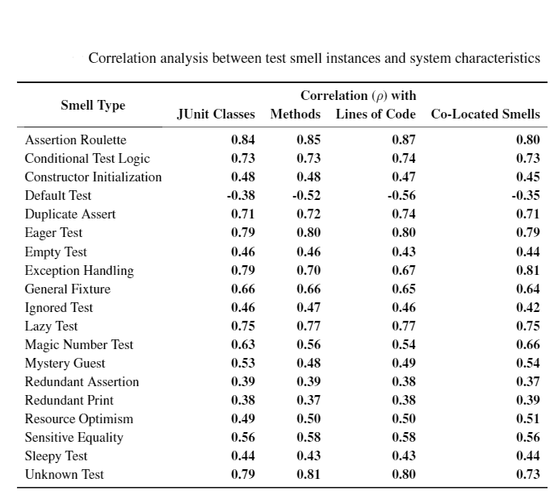

To further understand the degree to which test smells can impact software maintenance activities of an Android app, we studied the impact of each test smell type on specific characteristics of the apps test suite. Our investigation followed a similar approach to [1].
First, for each smell type, we obtained the apps that exhibited the smell. Next, for each smelly app, we obtained the total number of JUnit classes contained in the app. From these classes, we obtained the total number of methods and lines of code (LOC). Additionally, we also obtained the count of co-located smells exhibited by the class for each smell type. Finally, we computed the correlation between the number of instances of the specific smell and the derived characteristics.To facilitate our investigation, we defined the following Null Hypotheses: The existence of a specific test smell does not have an impact on an app's test suite characteristics.
The below table provides the result of computing the Spearman rank correlation coefficient for each characteristic. Not surprisingly the majority of the smell types yielded positive and statistically significant (i.e., p < 0.05) values. The Default Test smell is the only smell that exhibits a weak negative correlation. This is not surprising since this smell is associated with the sample unit test file included by Android Studio and does exercise code in production files. All other smells exhibit positive weak (0.3 <= rho < 0.5) to strong (0.5 <= rho < 1.0) correlations [2] with test suite characteristics. Given these results the Null Hypothses can be rejected. As such, developers need to pay careful attention to the quality of the code that they write for unit tests, much in the same way they do for production tests, as a means to reduce the effort required to maintain the test code.
